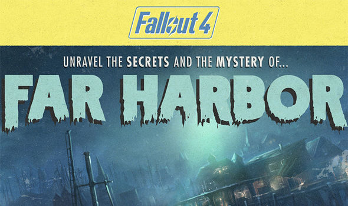
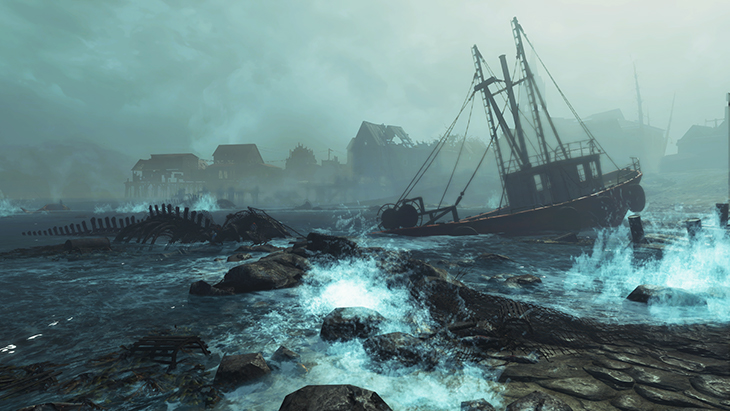
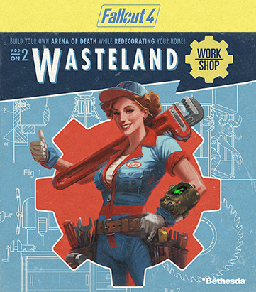
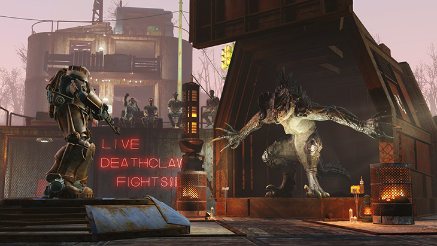

Out of the three DLCs confirmed for launch in 2016, Fallout 4: Far Harbor is the only one that looks to add a whole new area to the map. It has also been revealed that Far Harbor is also a real place, much like how the original Fallout 4 map is filled with real locations. "Far Harbor features the largest landmass for an add-on that we’ve ever created, filled with new faction quests, settlements, lethal creatures and dungeons. Become more powerful with new, higher-level armor and weapons. The choices are all yours," Bethesda adds.


"With the Wasteland Workshop, design and set cages to capture live creatures – from raiders to Deathclaws! Tame them or have them face off in battle, even against your fellow settlers. The Wasteland Workshop also includes a suite of new design options for your settlements like nixie tube lighting, letter kits, taxidermy and more!" This DLC, to me sounds like the most fun because you can literally use any AI in the game and you can fight them, you even use them for your own good to defend yourself! I hope you can work this somehow into your story mode and use it the legit way, that way you have to earn everything you make.